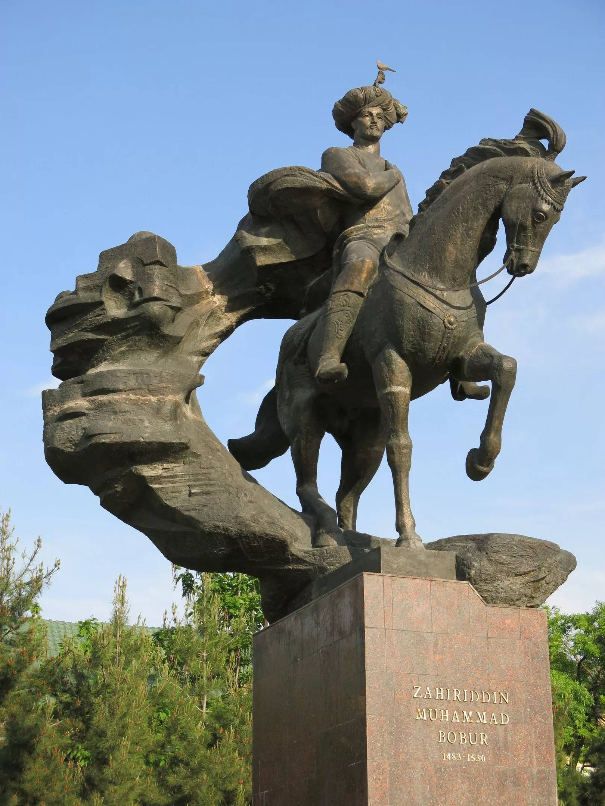
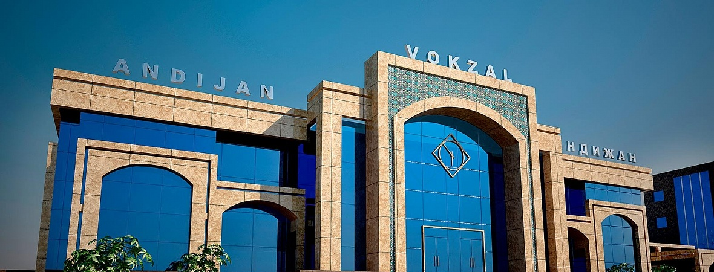

Viloyat 1941-yil 6-martda SSSR Oliy Soveti Prezidiumining farmoni bilan Fargʻona viloyatidan ajralib chiqibOʻzbekiston SSR tarkibida tashkil etilgan. Bu hududda avval, 1926—1930-yillarda O‘zbekiston SSRning Andijon okrugi tashkil etilgan.
Dastlab viloyat tarkibiga Oyim, Oltinkoʻl tumani, Andijon, Baliqchi, Voroshilov, Jalaquduq, Izboskan, Lenin, Marhamat, [Paxtaobod, Stalin, Xoʻjaobod tumanlari hamda viloyatga qarashli Andijon va Leninsk shaharlari kirgan.
1943-yilda Xoldevonbek, Chinobod tumanlari, 1950-yilda Boʻz tumani, 1953-yilda Buloqboshi, Qoʻrgʻontepa, Moskva tumanlari tashkil etilgan. 1959-yilda Moskva viloyati tugatildi.